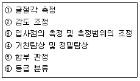
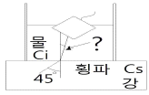
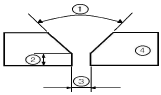
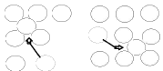

초음파비파괴검사산업기사(구) (2008-03-02 기출문제)
1과목: 초음파탐상시험원리
1. 원거리 음장영역에서 초음파 빔의 에너지 집중은?
- 빔의 폭에 비례한다.
- 빔의 중심에서 최대가 된다.
- 빔의 외곽에서 최대가 된다.
- 빔의 외곽 및 중심에서 동일하게 나타난다.
(정답률: 알수없음)

2. 동일한 시험조건 하에서 봉형 강재 등의 수직탐상시 측면에서 모드변환이 발생하여 가상 지시가 나타날 수 있는 확률이 가장 작은 주파수는?
- 1MHz
- 3MHz
- 4MHz
- 5MHz
(정답률: 알수없음)
3. 불감대 영역(Dead Zone)이란?
- 근거리 음장내에 있는 탐상불능 영역
- 빔 분산의 외측 영역
- 송신펄스와 저면에코사이의 영역
- 원거리 음장과 근거리 음장사이의 영역
(정답률: 알수없음)
4. 침투탐상시험에 사용되는 침투액의 오염액의 오염에 가장 일반적인 대상은?
- 금속 부스러기
- 기름
- 세척제
- 물
(정답률: 알수없음)
5. 초음파탐상시 시험편의 양 표면에 탐촉자를 두고 검사하는 방법은? (단, 한쪽은 송신, 다른 한쪽은 수신이다.)
- 접촉법
- 판파법
- 투과법
- 표면파법
(정답률: 알수없음)
6. 두 개의 송, 수신 탐촉자를 사용하여 초음파탐상을 수행할 때 가장 효율적인 조합은?
- 수정의 송신기, 티탄산바륨의 수신기
- 티탄산바륨의 송신기, 티탄산바륨의 수신기
- 황산리튬의 송신기, 티탄산바륨의 수신기
- 티탄산바륨의 송신기, 수정의 수신기
(정답률: 알수없음)
7. 알루미늄에서 표면파가 발생하도록 쐐기를 설계할 때 입사각은 약 얼마인가? (단, 알루미늄에서의 횡파속도는 3100m/s, 쐐기에서의 종파속도는 2700m/s 이다.)
- 48°
- 57°
- 61°
- 75°
(정답률: 알수없음)
8. 와전류탐상시험에서 시험주파수 시험주파수 고려해야 할 요소와 가장 거리가 먼 것은?
- 표피 효과
- 코일임피던스 특성
- 프로브의 속도
- 프로브의 형태
(정답률: 알수없음)
9. 용접부의 덧붙임이 편평하게 표면처리된 용접부에서 횡균열의 검출에 가장 적합한 주사방법은?
- 상하주사
- 경사평행주사
- 좌우주사
- 용접선상주사
(정답률: 알수없음)
10. 다음 중 자분탐상시험에서 관촬되는 의사지시에 관한 설명으로 틀린 것은?
- 탈자 후 재자화시키면 없어지는 경우도 있다.
- 시험체의 단면적이 급변하는 곳에 나타나기 쉽다.
- 프로드 접촉부에서는 주로 방사상의 형태로 나타난다.
- 낮은 전류를 사용하는 경우 자화케이블 근처에 나타나기 쉽다.
(정답률: 알수없음)
11. 초음파 탐상기의 성능점검 사항과 가장 거리가 먼 것은?
- 증폭 직선성
- 초음파 빔 강도
- 시간축 직선성
- 분해능
(정답률: 알수없음)
12. 다음 중 동일 조건으로 검사하여 원거리음장 영역에 존재하는 금속 내부의 원형평면 결함의 결합지시가 가장 큰 것은?
- 결함 면적 3mm2이고, 검사체 표면으로부터 10mm지점
- 결함 면적 6mm2이고, 검사체 표면으로부터 20mm지점
- 결함 면적 9mm2이고, 검사체 표면으로부터 30mm지점
- 결함 면적 12mm2이고, 검사체 표면으로부터 40mm지점
(정답률: 알수없음)
13. 다음의 비파괴시험의 실시목적에 대해 기술한 것이다. 옳은 것은?
- 비파괴시험은 재료나 부품, 구조물 등을 파괴하는 것도 포함하며, 결함이나 내부구조 등을 조사하는 시험이다.
- 비파괴시험으로 결함을 검출하는 경우 결함의 합ㆍ부 기준을 명확히 하고, 적절히 시험방법과 시험조건을 선정하지 않으면 안된다.
- 비파괴시험의 주목적은 대량 생산의 향상에 있다.
- 비파괴시험에서 원리적인 차이는 검출 정도에 영향을 미치지 않으므로 어떤 방법을 이용할 것인가에 대해서는 검토하지 않아도 된다.
(정답률: 알수없음)
14. 다음 중 비파괴검사법에 대한 설명으로 틀린 것은?
- 내부 결함의 검출에 적당한 방법은 방사선투과시험과 초음파탐상시험이다.
- 초음파탐상시험에서는 초음파의 진행방향에 평행한 방향의 결함을 검출하기 쉽다.
- 표층부 결함의 검출에는 자분탐상시험과 와전류탐상시험이 적당하다.
- 용접부의 기공을 검출하기에 가장 좋은 시험법은 방사선투과시험이다.
(정답률: 알수없음)
15. 초음파 탐상시험에서 주어진 재질의 음향임피던스는?
- 밀도에 정비례하고 속도에 반비례 한다.
- 밀도에 반비례하고 속도에 정비례한다.
- 밀도와 속도에 반비례한다.
- 밀도와 속도의 곱이다.
(정답률: 알수없음)
16. 물질 내의 전파하는 초음파의 굴절각을 계산하는데 이용되는 법칙은?
- 프라운 호퍼의 법칙
- 스넬의 법칙
- 프레스넬장의 법칙
- 샤를의 법칙
(정답률: 알수없음)
17. 수침법에서 초음파가 입사각 13.1°로 강재에 전달되었다면 강재 내에 존재하는 음파로 옳은 것은?
- 표면파만 존재한다.
- 종파, 횡파 모두 존재한다.
- 횡파는 존재하나 종파는 존재하지 않는다.
- 종파는 존재하나 횡파는 존재하지 않는다.
(정답률: 알수없음)
18. 표면이 거칠거나 표면형상이 곡면인 경우, 탐촉자의 불완전한 접촉이나 접촉매질의 두께 등에 의해 발생하는 손실 또는 감쇠는?
- 전달손실
- 확산손실
- 반사손실
- 산란감쇠
(정답률: 알수없음)
19. 초음파탐상시험에서 대비시험편에 관한 설명 중 가장 옳은 내용은?
- 인공결함으로는 평저공 만을 사용한다.
- 대피시험편에 녹이 발생하지 않도록 방청유 등을 도포하여 관리하는 것이 좋다.
- 시험대상물과 동일한 재료만으로 제작해야 한다.
- 대비시험편과 표준시험편의 사용 목적은 항상 동일하다.
(정답률: 알수없음)
20. 펄스반사법에서 초음파가 탐촉자로부터 발생한 후 저면에 반사되어 수신될 때까지의 소요시간이 10μs라면 이 시험체의 두께는 얼마인가? (단, 이 시험체의 초음파 종파속도는 6000mm/s이다.)
- 7.5mm
- 15mm
- 30mm
- 60mm
(정답률: 알수없음)
2과목: 초음파탐상검사
21. 다음 중 용접부의 초음파탐상시험시 결함의 종류 판별에 가장 영향이 먼 인자는?
- 결함의 형상
- 결함의 위치
- 반사파의 크기
- 시험체의 두께
(정답률: 알수없음)
22. 용접덧살을 제거하지 않은 오스테나이트계 스테인리스강 용접부를 검사하기에 가장 좋은 탐촉자는?
- 횡파수직탐촉자
- 횡파경사각탐촉자
- 종파수직탐촉자
- 종파경사각탐촉자
(정답률: 알수없음)
23. 용접부에 대한 경사각탐상시 어떤 결함이 검출되었다. 이 결함을 진자주사하였더니 결함에코 높이가 변하지 않고, 목돌림주사하였더니 결함에코 높이가 급격히 변하였다. 이 때 추정되는 결함의 종류는?
- 단일기공
- 용입불량
- 언더컷
- 균열
(정답률: 알수없음)
24. 강용접부를 [보기]와 같이 경사각탐상할 때 탐상순서를 올바르게 나타낸 것은?

- ② - ① - ③ - ④ - ⑥ - ⑤
- ③ - ① - ② - ④ - ⑥ - ⑤
- ③ - ① - ② - ④ - ⑤ - ⑥
- ③ - ② - ① - ④ - ⑥ - ⑤
(정답률: 알수없음)
25. 다음 중 다른 진동모드로 변환이 가장 쉬운 파의 종류는?
- 종파
- 횡파
- 판파
- 표면파
(정답률: 알수없음)
26. 탐촉자의 진동자 재질로 수정을 사용할 때 수정의 특징으로 틀린 것은?
- 불용성이다.
- 송신효율이 좋다.
- 큐리점(curie point)이 높다.
- 기계적, 전기적으로 안정하다.
(정답률: 알수없음)
27. 두께가 14.3mm인 강용접부를 70° 굴절각으로 탐상하려한다. 1.2스킵(skip)에 해당하는 빔거리(beam path)는 얼마인가?
- 36mm
- 50mm
- 94mm
- 100mm
(정답률: 알수없음)
28. 시험편의 표면과 평행한 내부결함을 검출하는데 용이한 초음파 탐상시험법은?
- 경사각 탐상법
- 수직 탐상법
- 탠텀(Tandem)법
- TOF(time of flight)
(정답률: 알수없음)
29. 초음파탐상시 결함 크기와 관련하여 수행하는 전이 손실(transfer loss)에 관한 설명으로 틀린 것은?
- 빔거리에 의한 감쇠는 보정해야 한다.
- 시험체의 표면상태 등의 영향을 보상해 주는 방법이다.
- 에코의 최대높이에서 50% 될 때가지 탐촉자의 이동 거리를 보정한다.
- 시험체 및 시험편에서의 감쇠량을 측정한다.
(정답률: 알수없음)
30. 다음 중 판재의 용접부에서 융합선(Fusion Line)을 따라 존재하는 불연속의 검출에 일반적으로 가장 효과적인 방법은?
- 표면파를 이용한 경사각 접촉법
- 종파를 이용한 수직 접촉법
- 표면파를 이용한 수침법
- 횡파를 사용한 경사각법
(정답률: 알수없음)
31. 5Z10N 탐촉자를 사용하여 측정범위를 250mm에 조정한 후탐촉자를 5Z10×10A70 탐촉자로 교체, 측정범위를 100mm로 탐상하려고 할 때 필요한 조작에 대한 설명 중 맞는 것은?
- 영점만 재조정한다.
- 그대로 탐상하여도 좋다.
- 영점은 그대로 하고 측정범위만 재조정한다.
- 측정범위 조정에 필요한 모든 과정을 다시 한다.
(정답률: 알수없음)
32. 다음 중 강용접부의 경사각탐상에 관한 설명으로 옳은 것은?
- 내부 용입불량의 검출에는 탠덤탐상법이 적합하다.
- 내부 용입불량의 검출에는 V투과법이 적합하다.
- 측면 용입불량의 검출에는 탠덤탐상법이 적합하다.
- 블로홀의 검출에는 탠덤탐상법 및 V투과법이 적합하다.
(정답률: 알수없음)
33. 그림과 같이 국부 수침법에 의해 강재를 경사각 탐상할 때 강재 중에 횡파 굴절각 45도로 전파시키기 위해서는 입사각을 몇 도로 하면 되는가? (단, Ci 는 1480m/s, Cs 는 3230m/s이다.)

- 18.9
- 24.8
- 34.6
- 54.7
(정답률: 알수없음)
34. 다음 중 똑같은 크기의 결함이 있는 경우 초음파탐상 시험에서 가장 발견하기 쉬운 결함은?
- 이종 물질의 혼입
- 시험재 내부의 구형의 결함
- 초음파 진행 방향에 수직인 균열
- 초음파 진행 방향에 평행인 균열
(정답률: 알수없음)
35. 초음파탐상시험시 결함의 길이를 측정하는 방법이 아닌 것은?
- 게이트(gate)법
- AVG선도(AVG diagram)법
- 문턱값(threshold value)법
- 6데시벨 드롭(6db drop)법
(정답률: 알수없음)
36. 전기에너지와 기계에너지를 상호변환해 주는 성질을 지니고 있어서 일반적으로 초음파 탐촉자에 널리 사용되는 소자는?
- 압전소자
- 자왜소자
- 광전소자
- 광음향소자
(정답률: 알수없음)
37. 초음파가 두 매질의 경계를 통과 할 때에 다음 중 투과율이 가장 큰 것은?
- 철강 → 알루미늄
- 알루미늄 → 공기
- 공기 → 알루미늄
- 물 → 철강
(정답률: 알수없음)
38. 수침법 초음파탐상용 탐촉자에 사용되는 음향렌즈의 중요한 특성이 아닌 것은?
- 조립하기에 용이할 것
- 음향감쇠가 매우 작을 것
- 물에서 굴절율이 작을 것
- 물과 진동자의 음향 임피던스가 유사할 것
(정답률: 알수없음)
39. 초음파 탐상장치의 스크린표시방법 중 시험체의 평명을 표시하는 방식은?
- A-Scope 표시
- B-Scope 표시
- C-Scope 표시
- D-Scope 표시
(정답률: 알수없음)
40. 검사자로서 초음파탐상검사를 하기 위한 준비자세 중 관계가 먼 것은?
- 합부판정에 대한 사항을 숙지하여야 한다.
- 장비의 검교정상태를 확인하여야 한다.
- 결함의 유무가 제품에 미칠 영향을 고려하여 판정한다.
- 개선각도나 용접방법 등에 대한 정보를 수집한다.
(정답률: 알수없음)
3과목: 초음파탐상관련규격 및 컴퓨터활용
41. 보일러 및 압력용기에 대한 초음파탐상검사(ASME Sec.VArt4)에 따라 용접부에 대한 시스템 교정 중에서 경사각빔에 대해 교정 또는 측정해야 할 대상이 아닌 것은?
- 거리 범위 교정
- 탐촉자 이동속도 측정
- 거리-진폭 교정
- 기본 교정시험편의 표면노치로부터 에코진폭 측정
(정답률: 알수없음)
42. 강용접부의 초음파탐상 시험방법(KS B 0896)의 경사각 탐촉자 성능 점검주기에서 입사점, 탐상굴절각, 탐상감도 등은 작업개시시에 조정하며 또한 이것들은 작업 시간 몇 시간이내 마다 점검하도록 규정하고 있는가?
- 4시간이내
- 5시간이내
- 6시간이내
- 8시간이내
(정답률: 알수없음)
43. 강용접부의 초음파탐상 시험방법(KS B 0896)에서 경사각탐상시 초음파가 통과하는 부분의 모재는 필요에 다라 미리 수직탐상을 하여 탐상에 방해가 되는 흠을 미리 검출해야 하는데 이 때 탐상감도는 어떻게 해야 하는가?
- 건전부의 제1회 바닥면 에코높이가 50%가 되게 한다.
- 건전부의 제1회 바닥면 에코높이가 80%가 되게 한다.
- 건전부의 제2회 바닥면 에코높이가 50%가 되게 한다.
- 건전부의 제2회 바닥면 에코높이가 80%가 되게 한다.
(정답률: 알수없음)
44. 보일러 및 압력용기에 대한 초음파탐상검사(ASME Sec.VArt.4)에 따른 용접부 탐상에서 탐상에 필요한 절차서의 필수 변수에 들어가지 않는 것은?
- 시험될 용접부 또는 재료의 종류와 형상
- 표면조건(상태)
- 접촉매질의 종류
- 탐촉자의 형식, 주파수
(정답률: 알수없음)
45. 알루미늄의 맞대기용접부의 초음파경사각탐상 시험방법(KSB 0897)에서 모재 두께가 30mm 일 때 흠길이가 9mm이면 홈의 분류는? (단, B종으로 구분된다.)
- 1류
- 2류
- 3류
- 4류
(정답률: 알수없음)
46. 초음파 탐상시험용 표준 시험편(KS B 0896)에서 경사각 탐촉자의 굴절각 측정에 이용되는 것은?
- STB-N1
- STB-A2
- STB-G V3
- STB-A7963
(정답률: 알수없음)
47. 강용접부의 초음파탐상 시험방법(KS B 0896)에서 인접한 구분선 작성의 감도차는?
- 2dB
- 6dB
- 9dB
- 12dB
(정답률: 알수없음)
48. 알루미늄의 맞대기용접부의 초음파 경사각탐상 시험방법(KSB 0897)에서 흠의 지시길이가 5mm였다면 이 흠의 몇 류에 속하는가?
- 1류
- 2류
- 3류
- 4류
(정답률: 알수없음)
49. 압력 용기용 강판의 초음파탐상시험(KS D 0233)에서 두께가 63.5mm인 강판 용접부에 사용하여야 할 탐촉자는?
- 2진동자 수직 탐촉자
- 경사각 탐촉자
- 수직 탐촉자
- 수직 탐촉자 또는 2진동자 수직 탐촉자
(정답률: 알수없음)
50. 보일러 및 압력용기에 대한 초음파 탐상검사(ASME Sec.V.Art4)에서 용접부에 대한 초음파탐상검사시 시험편의 곡률반지름이 100mm일 때, 사용되어 질 수 있는 보정 블록의 곡률 반지름은?
- 80mm
- 120mm
- 200mm
- 250mm
(정답률: 알수없음)
51. 압력용기 제작규정(ASME Sec.Ⅷ, Div.1)dp 따라 초음파탐상 결과를 판정하고자 할 때 결함의 길이에 관계없이 불합격 처리되는 결함은?
- 균열
- 기공
- 슬래그
- 블로우홀
(정답률: 알수없음)
52. 보일러 및 압력용기에 대한 초음파탐상검사(ASME Sec.V Art.23 SA-577)의 강판 경사각빔에 대한 경사각탐상 기준에서 격자선을 따라 탐촉자를 주사할 때 결함이 검출되면 그 부위를 중심으로 얼마나 넓이를 100% 시험하여야 하는가?
- 3.35in2
- 6.65in2
- 8.85in2
- 12.25in2
(정답률: 알수없음)
53. 금속재료의 펄스반사법에 따른 초음파탐상 시험방법 통칙(KS B 0897)에서 규정된 탐상도형표시 기본기호와 설명의 연결이 서로 틀린 것은?
- T : 송신펄스
- F : 흠집에코
- B : 바닥면에코
- S : 측면에코
(정답률: 알수없음)
54. 보일러 및 압력용기의 재료에 대한 초음파탐상검사(ASME Sec.V, Art.5)에 따라 지시진폭이 거리진폭곡선의 몇%를 초과하는 모든 불완전부를 조사하는가?
- 20%
- 40%
- 50%
- 60%
(정답률: 알수없음)
55. 보일러 및 압력용기의 재료에 대한 초음파탐상검사(ASME Sec.V, Art.5)에서 볼트재의 수직빔 검사교정에 쓰이는 A형 시험편의 평저공의 위치는?
- 시험편의 끝부분의 D/5
- 시험편의 끝부분의 D/4
- 시험편의 중심선
- 시험편의 끝부분의 D/3
(정답률: 알수없음)
56. 웹서비스에서 제공되는 여러 가지 자원들에 대한 주소를 나타내는 것은?
- JAVA
- URL
- HTML
- XML
(정답률: 알수없음)
57. 도메인네임을 구성하는 영역 중 최상위 도메인의 종류와 그에 해당하는 기관명으로 옳지 않은 것은?
- edu - 교육 기관
- org - 연구 기관
- net - 네트워크 관련기관
- gov - 정부 기관
(정답률: 알수없음)
58. 전자우편의 송ㆍ수신을 담당하며, 서버와 클라이언트 간에 메일을 전달하는 역할을 하는 것은?
- DNS
- PPP
- POP
- FTP
(정답률: 알수없음)
59. 컴퓨터에서 속도가 빠른 CPU와 속도가 느린 주기억장치 사이에 위치하여 동작속도를 빠르게 해주는 메모리는?
- 캐시 메모리
- 가상 메모리
- 플래시 메모리
- 자기코어 메모리
(정답률: 알수없음)
60. 인터넷에 접속하기 위해 사용하는 웹 브라우저가 아닌 것은?
- 쿠키(Cookie)
- 모자이크(Mosaic)
- 넷스케이프(Netscape)
- 인터넷 익스플로러(Internet Explorer)
(정답률: 알수없음)
4과목: 금속재료 및 용접일반
61. 잠호용접이라고도 하며 용접법 중 입상의 미세한 용제를 사용하는 용접법은?
- 불활성가스 아크 용접
- 버트 용접
- 서브머지드 아크 용접
- 시임 용접
(정답률: 알수없음)
62. 표점거리 50mm, 인장시험후 표점거리가 60mm일 경우 연신율은?
- 16.7%
- 20%
- 25%
- 33.3%
(정답률: 알수없음)
63. 잔류응력 완화법이 아닌 것은?
- 응력 제거 어닐링
- 그라인딩
- 저온 응력 완화법
- 피닝
(정답률: 알수없음)
64. 탄산가스 아크 용접법의 분류에서 용극식 중 플럭스와이어 CO2법에 속하지 않는 것은?
- 아코스 아크법
- 텅스텐 아크법
- 퓨즈 아크법
- 유니언 아크법
(정답률: 알수없음)
65. 피복 아크 용접봉 선택시 고려할 사항이 아닌 것은?
- 용접성
- 자동성
- 작업성
- 경제성
(정답률: 알수없음)
66. 교류 용접기의 종류 4가지를 올바르게 나열한 것은?
- 가동철심형, 발전기형, 탭전환형, 가포화리액터형
- 가동철심형, 가동코일형, 탭전환형, 가포화리액터형
- 가동철심형, 가동코일형, 정류기형, 포화리액터형
- 가동철심형, 가동코일형, 탭전환형, 셀렌 정류기형
(정답률: 알수없음)
67. 맞대기용접, 필릿용접 등의 비드 표면과 모재와의 경제부에 발생되는 균열이며, 구속응력이 클 때 용접부 가장자리에서 발생하여 성장하는 균열은?
- 토 균열
- 설퍼 균열
- 루트 균열
- 헤어 크랙
(정답률: 알수없음)
68. 가스 절단속도에 영향을 미치지 않는 것은?
- 절단산소의 압력
- 절단산소의 순도
- 강판의 두께
- 용기내의 가스압력
(정답률: 알수없음)
69. 다음 용접부 그림의 명칭 중 틀린 것은?

- ①:홈의 각도
- ②:홈의 깊이
- ③:루트 간격
- ④:모재
(정답률: 알수없음)
70. 다음 용접법중 저항용접에 속하는 것은?
- 프로젝션 용접
- 전자빔 용접
- 테르밋 용접
- 레이져 용접
(정답률: 알수없음)
71. 다음 중 대표적인 시효 경화성 합금은?
- Al-Cu-Mg-Mn 합금
- Cu-Zn 합금
- Cu-Sn 합금
- Fe-C 합금
(정답률: 알수없음)
72. [그림]과 같은 격자결함은? (단, 점선으로 표시된 원자는 격자사이로 끼어 들어가는 상태를 그린 것이다.)

- 점결함
- 선결함
- 면결함
- 체적결함
(정답률: 알수없음)
73. 오스테나이트계(austenite type) 스테인리스강에서 입계 부식(intergranular corrosion)을 방지하기 위한 대책이 아닌 것은?
- 탄소의 함량을 0.03% 이하로 낮게 한 것을 사용한다.
- 1000∼1150℃로 가열하여 탄화물을 고용시킨 후 급냉하는 고용화열처리를 한다.
- Cr 탄화물을 가능한 한 많이 석출시켜 스테인리스강이 예민화(sensitize) 되도록 한다.
- 탄소와의 친화력이 Cr 보다 큰 Ti, Nb 등을 첨가해서 안정화시킨다.
(정답률: 알수없음)
74. 다음 중 비정질 합금에 대한 설명으로 틀린 것은?
- 결정이방성이 없다.
- 구조적으로 장거리의 규칙성이 없다.
- 가공경화가 심하여 경도를 상승시킨다.
- 열에 약하며, 고온에서는 결정화하여 전혀 다른 재료가 된다.
(정답률: 알수없음)
75. 다음 열전대 중에서 가장 높은 온도를 측정할 수 있는 것은?
- 백금 - 백금ㆍ로듐
- 철 - 콘스탄탄
- 크로멜 - 알루멜
- 구리 - 콘스탄탄
(정답률: 알수없음)
76. 심한 가공이나 주조하여 만든 Cu 합금은 사용 중 혹은 저장 중에 자연균열(season crack)이 일어난다. 이 균열의 방지법으로 틀린 것은?
- 표면에 도료를 칠한다.
- 표면에 아연도금을 한다.
- 암모니아가스 분위기 속에 저장해 둔다.
- 185∼260℃ 의 범위에서 가열하여 응력을 제거한다.
(정답률: 알수없음)
77. 다음 중 금속에 관한 일반적 설명으로 틀린 것은?
- 수은을 제외한 금속은 상온에서 고체상태의 결정구조를 갖는다.
- 전성 및 연성이 좋고, 금속 고유의 광택을 갖는다.
- 강자성체 금속으로 Fe, Co, Ni 등이 있다.
- 순금속은 합금에 비해 경도가 높다.
(정답률: 알수없음)
78. 응고 과정에서 결정이 나뭇가지 모양으로 이루어진 결정 조직은?
- 수지상결정
- 주상결정
- 편상결정
- 구상결정
(정답률: 알수없음)
79. 0.5% 탄소강의 723℃ 성상에서의 pearlite 양은 몇 %정도 인가? (단, 공석점의 탄소량은 0.8%이다.)
- 37.5
- 42.5
- 57.5
- 62.5
(정답률: 알수없음)
80. 다음 중 실용되고 있는 형상기억 합금계가 아닌 것은?
- Co - Mn 계
- Ti - Ni 계
- Cu - Al - Ni 계
- Cu - Zn - Al 계
(정답률: 알수없음)